Lo studio del game show lo usano sette giochi: La Balla Colossale, Nomi Cose e Città, Parola d'ordine, La Patata Bollente, Il Prezzo è Giusto, La Ruota della Fortuna e La Linea del tempo. L'obiettivo è farlo sembrare uno studio vero da prima serata, meno cartone animato, con colori accesi e niente oro dappertutto. Qui sotto com'è oggi e tre strade diverse. Il gioco non è stato toccato: sono solo disegni.
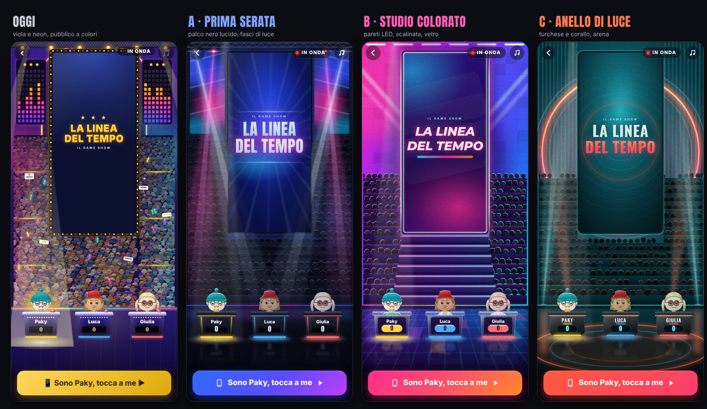
Palco nero lucido che riflette le luci, pareti LED blu e fucsia, fasci di luce veri nella foschia, pubblico in penombra.
La parete dietro è tutta pannelli LED fucsia, viola e ciano; scalinata illuminata sotto il maxischermo; banconi di vetro.
Un grande anello corallo dietro al maxischermo, pareti turchese a lamelle, luci che salgono dal palco, cerchi di luce sul pavimento.
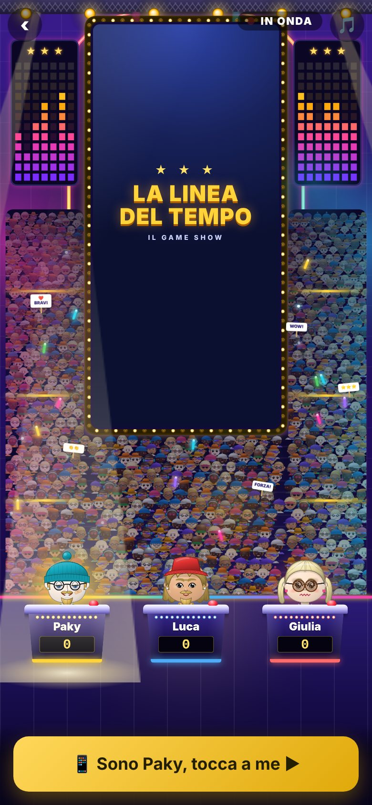
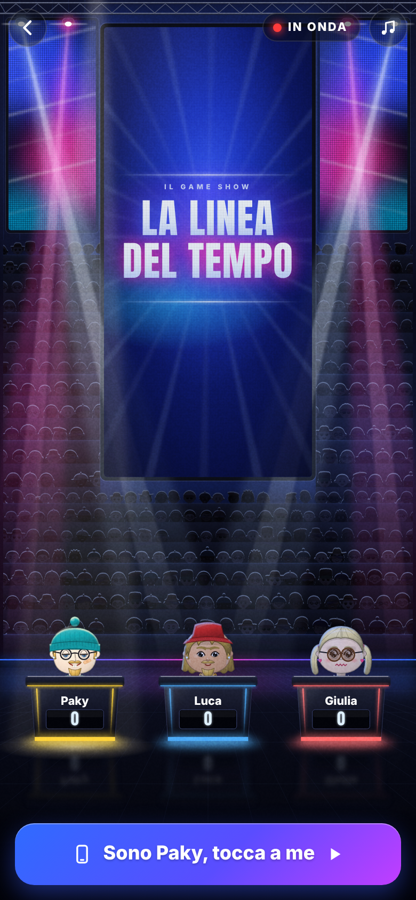
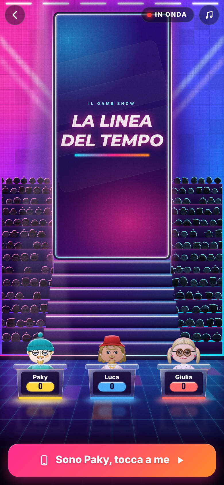
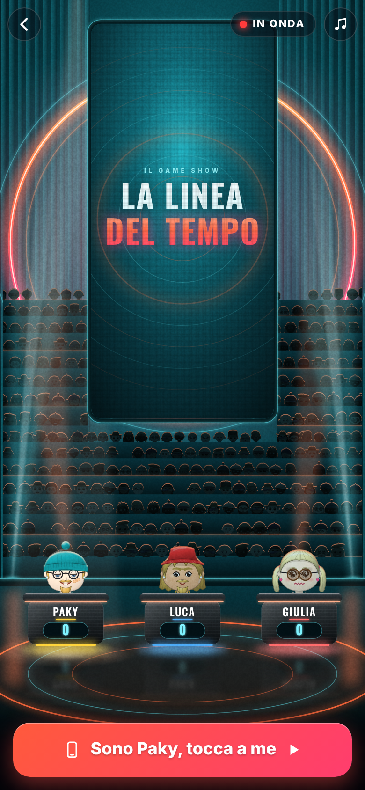
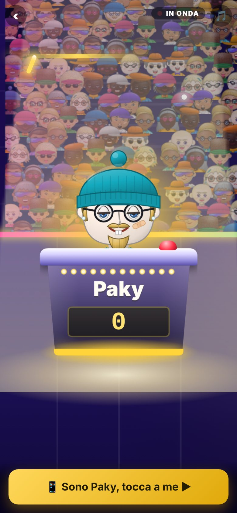
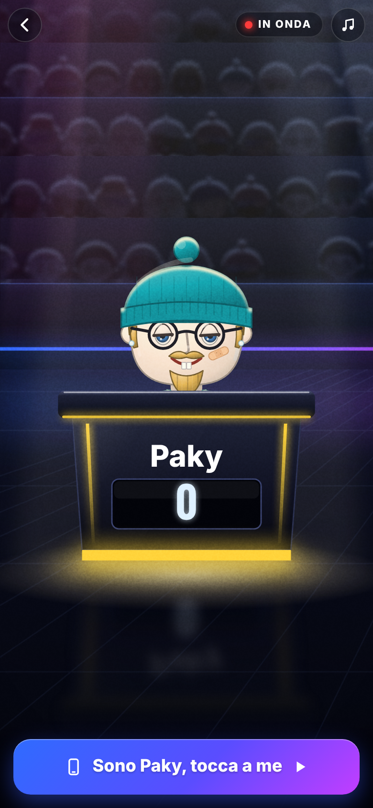
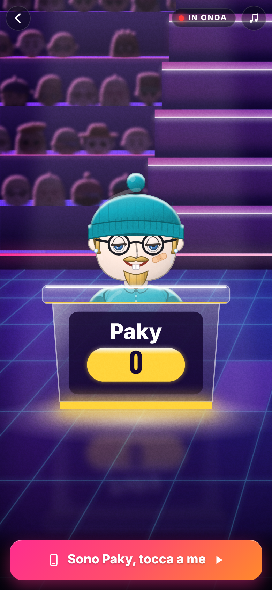
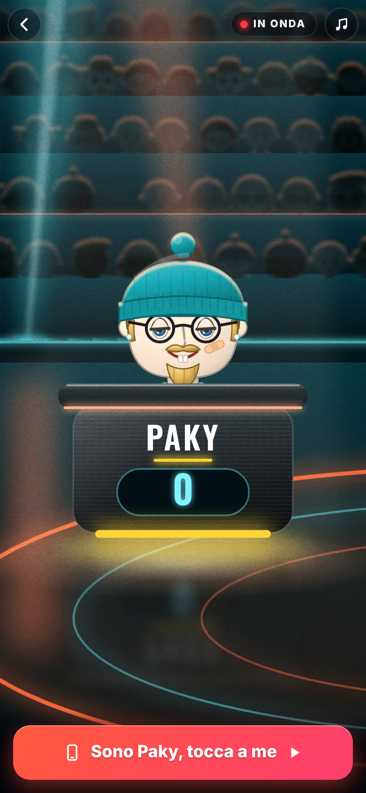
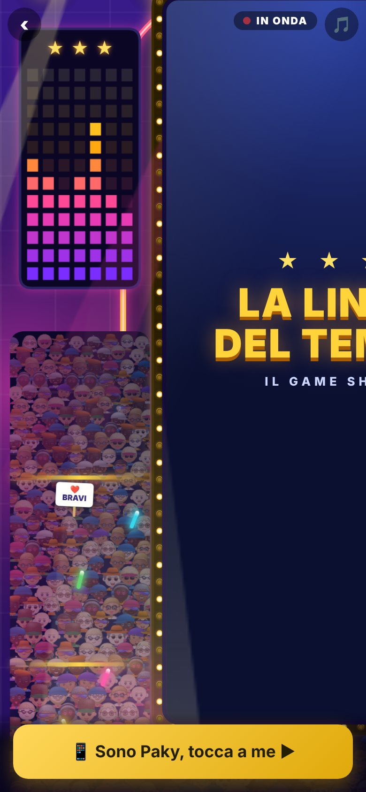
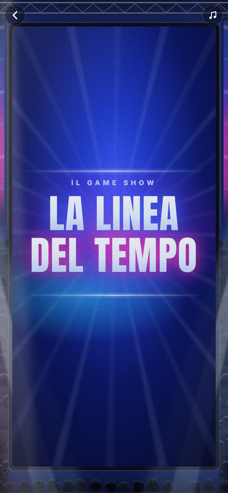
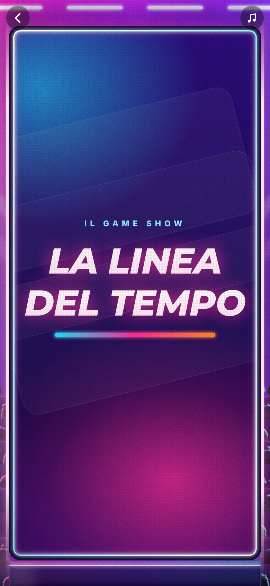
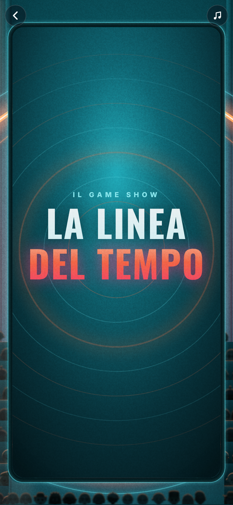
La strada A, con la scalinata della B. È la più vicina a una prima serata vera: il nero lucido fa risaltare i colori accesi delle luci, come nelle immagini nuove delle tessere dei giochi. Il maxischermo resta blu, quindi i sette giochi non vanno ritoccati, e il lavoro resta medio.
La scalinata illuminata sotto il maxischermo (presa dalla B) toglie metà del pubblico, che oggi riempie lo schermo, e fa subito «studio televisivo italiano».
La B è la più colorata ma la parete sempre accesa stanca un po' l'occhio dopo tante partite. La C è la più elegante ma costa di più, perché cambia il colore del maxischermo per tutti e sette i giochi.